Animaze Desktop: How can I use Animaze with Webex by Cisco?
Animaze enables you to join a video conference as a 3D or 2D digital character, customized to your digital self. The application works with any video conferencing tool, but in this article we’ll be focusing on the steps needed to bring your Animaze avatar to a Webex video conference.
In essence, what you need to do is install the Animaze application, open it, select your avatar and background, broadcast to the Animaze Virtual Camera and select this camera device as your webcam in Webex. We’ll focus on these step by step in the following sections.
Skip to:
Install Animaze and its prerequisites
1 Go to animaze.tv/download and download the Animaze Launcher installer.
2 Install the Animaze Launcher.
3 Open Animaze Launcher. This app is a hub for two apps, in this scenario we are interested in getting the Animaze application installed.
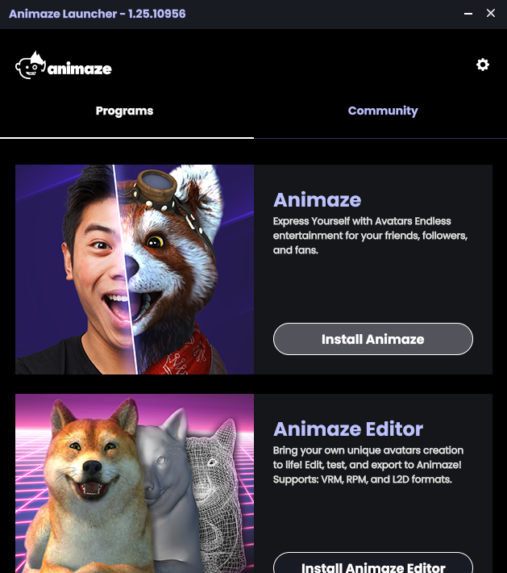
4 Click Install Animaze and wait for it to download.
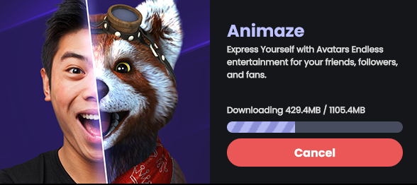
5 Once the download is done, click Launch Animaze.
Launching Animaze for the first time will prompt a few prerequisites installation steps that need admin privileges, make sure you allow admin privileges when prompted. One key prerequisite step here is the installation of the Animaze Virtual Camera which will enable you to join the video conference as a digital avatar.
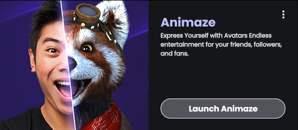
6 That is it with the Animaze installation process and first launch.
Note that on the first Animaze launch, the Onboarding/Tutorial flow will engage, you can skip it at any moment.
Broadcast your Animaze avatar to Webex
1 Open Animaze
2 (optional) In Animaze, choose and customize your avatar and select your background from the Galleries on the left side menu. In Animaze, click the Enable Virtual Camera button. This will enable Animaze to feed the rendered 3D avatar to the Animaze Virtual Camera device.
3 In Animaze, click the Enable Virtual Camera button. This will enable Animaze to feed the rendered 3D avatar to the Animaze Virtual Camera device.
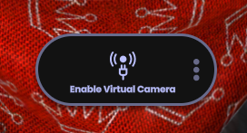
4 In Webex, when starting or joining a meeting, select Animaze Virtual Camera as a Camera
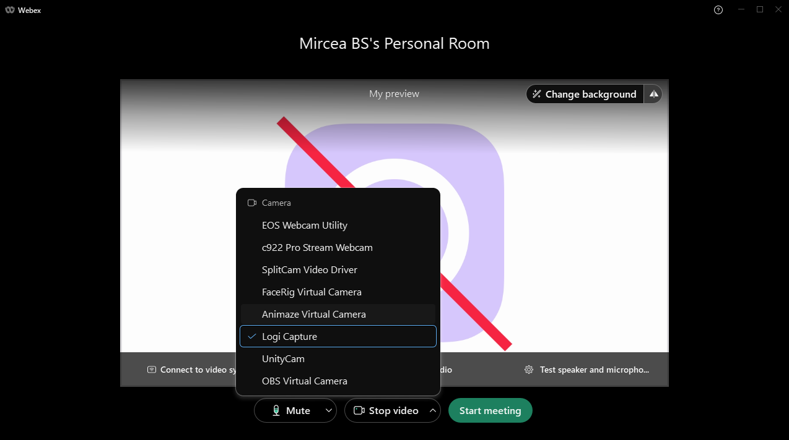
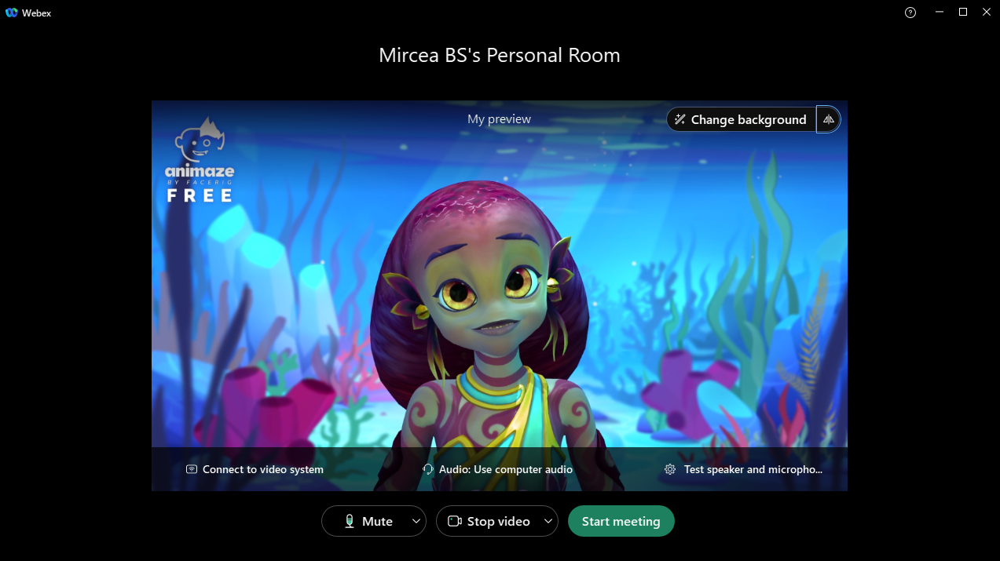
5 You can also select the Animaze Virtual Camera while in the meeting through the same options
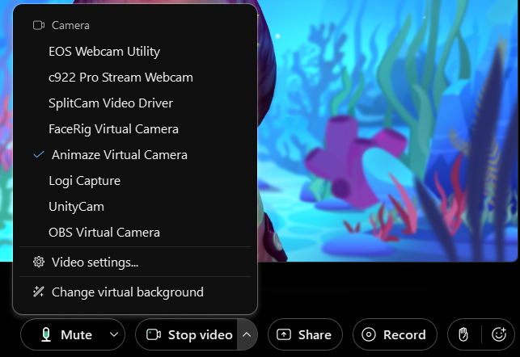
The pairing is done and you can now enjoy fun meetings.
Troubleshooting
Animaze cannot use my web camera
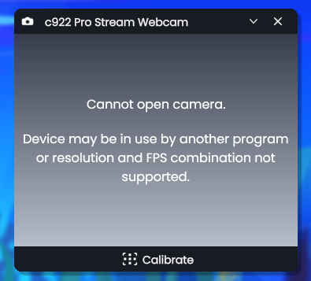
In this case, the camera could be used by another application (on Windows, camera devices are exclusive system resources, one single application can use it at a time), or the camera is not supported (which is unlikely).
Steps to fix:
1 Close Animaze
2 Close the application that uses the webcam
3 Restart Animaze and select the webcam
If the problem persists, contact Animaze support and we’ll guide you further
Animaze doesn’t see my webcam as an option
Steps to fix:
1 Check the Windows Camera Privacy settings and make sure you are allowing Animaze to use the webcam
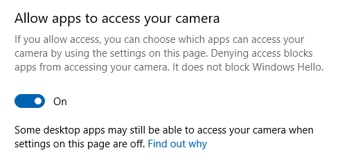
2 Restart Animaze and select the webcam.
Animaze Virtual Camera is not an option in Webex
In this scenario, the problem may be caused by the fact that the prerequisites for Animaze weren’t installed properly (either an Antivirus issue or not granting admin privileges). You can manually install the Animaze Virtual Camera quite easily.
Steps to fix:
1 Open Animaze Launcher
2 Click on the burger menu in the Animaze section
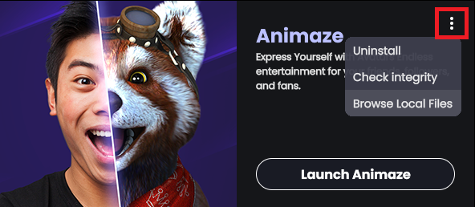
3 Click Browse Local Files. This will open the folder Animaze has been installed to.
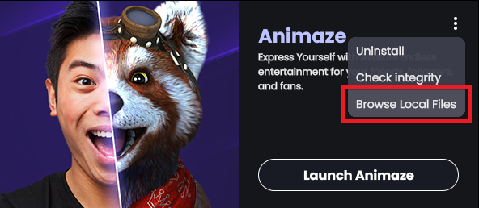
4 Navigate to the Bin\prerequisites\AnimazeVirtualCamera folder
Double-click the install.bat file and click Yes when the Windows UAC (User Account Control) dialog is prompted
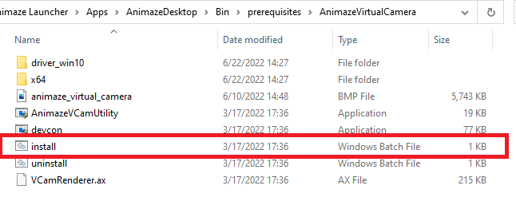
Other issues
If you encounter any other issue feel free to contact us here.